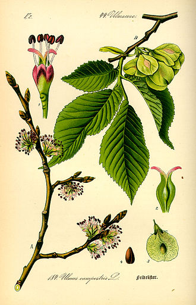

Bäume
Bäume bezeichnet holzige Pflanzen, die aus einer Wurzel, einem daraus hochgewachsenen Stamm und einer Krone bestehen, siehe Baum
Blätter
Bäume tragen Laubblätter oder Nadelblätter, die entweder mehrjährig am Baum verbleiben (immergrüne Arten) oder am Ende einer Vegetationsperiode abgeworfen werden (laubabwerfende Arten). Dazwischen liegen noch die halbimmergrünen Arten, die am Ende einer Vegetationsperiode nur einen Teil ihrer Blätter verlieren, bei Neuaustrieb dann aber die vorjährigen ersetzen. Die Nadelgehölze sind mit Ausnahme der Gattungen Lärchen (Larix) und Goldlärchen (Pseudolarix) immergrüne Arten. In den borealen und hochmontanen Biomen der Nordhalbkugel haben sich die immergrünen Nadelgehölze durchgesetzt, da sie zu Beginn der Vegetationsperiode bei ausreichender Temperatur sofort mit der Assimilation beginnen können, ohne zunächst Assimilationsorgane bilden zu müssen wie die laubabwerfenden Baumarten.
Die Gestalt der Blätter (Laub) ist ein wichtiges Bestimmungsmerkmal. Anordnung, Form, Größe, Farbe, Nervatur und Zähnung sowie haptische Eigenschaften können zur Differenzierung herangezogen werden. Nicht minder brauchbar zur Unterscheidung im winterlichen Zustand sind die (Blatt-)Knospen des Baumes. Eine eindeutige taxonomische Identifizierung der Arten ist allerdings nur anhand der Blüten oder Früchte möglich. Manche Bäume sind mit Dornen ausgestattet. Dies sind entweder kurze Zweige, die mit dorniger Spitze enden (Weißdorne, Wildformen von Obstbäumen) oder es sind stachelartig ausgebildete Nebenblätter wie etwa bei der Gewöhnlichen Robinie.
Ein europäischer Laubbaum trägt durchschnittlich 30.000 Blätter, die zusammen eine enorme Transpirationskapazität haben. An warmen Sommertagen kann der Baum mehrere hundert Liter Wasser verdunsten. Beispiel einer 80-jährigen, alleinstehenden Rotbuche:[11] In diesem Lebensalter ist der Baum 25 Meter hoch, und seine Baumkrone mit einem Durchmesser von 15 Meter bedeckt eine Standfläche von 160 m². In ihren 2700 m³ Rauminhalt finden sich 800.000 Blätter mit einer gesamten Blattoberfläche von 1600 m², deren Zellwände zusammen eine Fläche von 160.000 m² ergibt. Pro Stunde verbraucht diese Buche 2,352 kg Kohlenstoffdioxid, 0,96 kg Wasser und 25.435 Kilojoule Energie (das ist die in Form von Traubenzucker gespeicherte Energie, die eingestrahlte Sonnenenergie ist etwa siebenmal größer); im gleichen Zeitraum stellt sie 1,6 kg Traubenzucker her und deckt mit 1,712 kg Sauerstoff den Verbrauch von zehn Menschen. Die 15 m³ Holz des Baumes wiegen trocken 12.000 kg, allein 6000 kg davon sind Kohlenstoff.
Blüten
Die Blüten der Bäume aus gemäßigten Breiten sind manchmal verhältnismäßig unscheinbar; bei einigen Taxa sind einzelne Blütenblattkreise reduziert. Einige Baumarten gemäßigter Breiten haben eingeschlechtige Blüten. Dabei sitzen die Blüten beider Geschlechter entweder auf demselben Baum (einhäusig getrenntgeschlechtig, zum Beispiel Eiche, Buche, Hainbuche, Birke, Erle und Nussbaum) oder auf verschiedenen (zweihäusig getrenntgeschlechtig), so dass man männliche und weibliche Bäume zu unterscheiden hat (unter anderem bei Weiden und Pappeln). Andere Bäume wie Obstbäume, Rosskastanie und viele Bäume der wärmeren Klimate haben Zwitterblüten, die sowohl Staub- als auch Fruchtblätter ausbilden.
